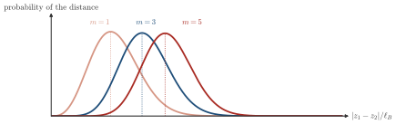
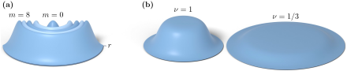

Advanced Quantum Materials 2027 · All lectures · Lecture notes
Session 4. Electrons in a Magnetic Field, Quantum Hall Effect and Landau Levels
4.16 Fractional filling and the Laughlin wavefunction
Let us now say that we want to occupy only a fraction of the available LLL orbitals, for example two out of every three, but in a way that keeps the electron gas uniform. If we only leave some orbitals empty, we obtain a density that is clearly not uniform and has lumps, since each empty orbital is at its own fixed radius. We look for a many-body wavefunction with three properties. First, it still lives only in the LLL, so it is built only from the coordinates \(z_i\) and never from \(\bar z_i\). Second, it is still antisymmetric, since the particles are still electrons. Third, in a heuristic sense, it keeps the electrons as far from each other as possible, since this is what a repulsive Coulomb interaction favors when we minimize its energy.
The construction that satisfies the three conditions at the same time is very simple. We take the wavefunction of the filled LLL (4.11) and we raise the Vandermonde factor to a power,
\[\Psi_m(z_1,\dots,z_N) = \prod_{i<j}(z_i-z_j)^m\; \exp\!\left(-\sum_i \frac{|z_i|^2}{4\ell_B^2}\right), \tag{4.12}\]
which is called the Laughlin wavefunction. The exponent \(m\) must be an odd integer, since an even power would make the wavefunction symmetric and not antisymmetric under exchange, and this is not allowed for fermions. A larger exponent makes the electrons avoid each other more, since the wavefunction now vanishes to \(m\)-th order, and not only linearly, when two electrons are at the same point, and this is the correlation effect that we wanted. When we compute the electron density that follows from it, we obtain the filling factor
\[\nu = \frac{1}{m}, \tag{4.13}\]
which we can also see directly by counting. The maximum power of any single coordinate in the fully expanded polynomial (4.12) is \(m(N-1)\), so the wavefunction uses the angular-momentum orbitals up to \(m(N-1)\). This means that \(N\) electrons are spread over \(\approx m(N-1)+1 \approx mN\) available LLL orbitals, which gives a filling fraction of \(N/(mN)=1/m\), in agreement with (4.13). So we start only from the single-particle LLL orbitals, the Pauli exclusion principle and a heuristic argument about correlations, and we arrive at the exact ground state of a strongly interacting many-body problem, which will give us fractional charge in the next section.
The statement that a larger \(m\) keeps the electrons apart can be seen already for two electrons, in Schematic 4.4.

Why must the exponent \(m\) of the Laughlin wavefunction (4.12) be an odd integer?
Show the answers
- A. ✗ False
This is false. The filling factor is \(\nu=1/m\). For \(m=2\) it is \(1/2\), which is smaller than one.
- B. ✗ False
This is false. The factor \((z_i-z_j)^2\) is still a polynomial in \(z\), so the state stays in the lowest Landau level. It is a valid state for bosons at \(\nu=1/2\).
- C. ✓ True
This is true. Exchanging two electrons changes the sign of \((z_i-z_j)\), and so \((z_i-z_j)^m\) changes sign only for odd \(m\). This is the antisymmetry that fermions need.
4.17 Quasiholes and quasielectrons
From this point to the end of Section 4.18, the material has no counterpart in session4.ipynb. The part of the notebook for this session stops at the integer quantum Hall state, its Landau levels, and its edge and Chern-insulator physics, which are Sections 4.10, 4.11 and 4.19 below. The Laughlin wavefunction, the quasiholes and quasielectrons, and the Berry-phase argument for fractional charge and anyonic statistics come from the transcript and the slides, and there is no numerical exercise built around them.
The excitations above the Laughlin ground state (4.12) also have a simple construction in these coordinates. A quasihole at the origin is obtained when we multiply the wavefunction by an extra overall factor \(z_i\) for every electron. A quasihole at an arbitrary position \(w\) is obtained instead when we insert a factor \((z_i-w)\) for each electron,
\[\Psi_{\text{qh}}(w) = \prod_i (z_i-w) \; \Psi_m(z_1,\dots,z_N). \tag{4.14}\]
This extra factor raises by one the effective power of every orbital. With the relation between angular momentum and radius of Section 4.15, this moves the charge density outward, away from \(w\), and leaves a region with less charge there, which is the quasihole. When we repeat this construction \(m\) times, at \(m\) different positions, we remove in total exactly the charge of one electron, which is consistent with each quasihole having only a fraction \(1/m\) of the electron charge. We will confirm this fraction directly with the Berry phase in Section 4.18. In the same language, a quasielectron is the inverse operation. Instead of raising the power, which we do when we multiply by \(z_i-w\), we lower it, and we do this with the derivative \(\partial/\partial z_i\) acting on the polynomial part instead of a multiplication. This moves charge inward instead of outward, and it gives an excitation with the opposite, negative, fractional charge.

We insert a quasihole three times, at three different places, in the Laughlin state with \(m=3\). The total charge removed is that of one electron. What is the charge of one quasihole?
Show the answers
- A. ✗ False
This is false. If one quasihole had the charge \(e\), three of them would remove \(3e\) and not the charge of one electron.
- B. ✗ False
This is false. Three quasiholes with \(e/9\) remove \(e/3\). This is a third of the charge of one electron and not the full charge.
- C. ✓ True
This is true. Three identical quasiholes remove the charge \(e\) together, so each one has \(e/3\). This agrees with \(q=e/m\), which we confirm with the Berry phase in the next section.